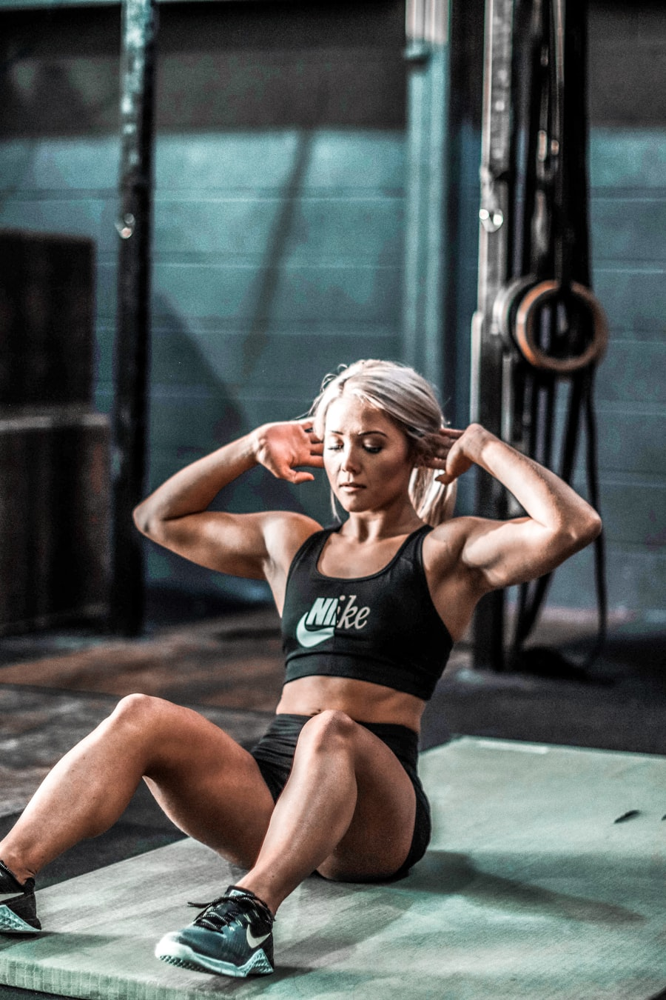
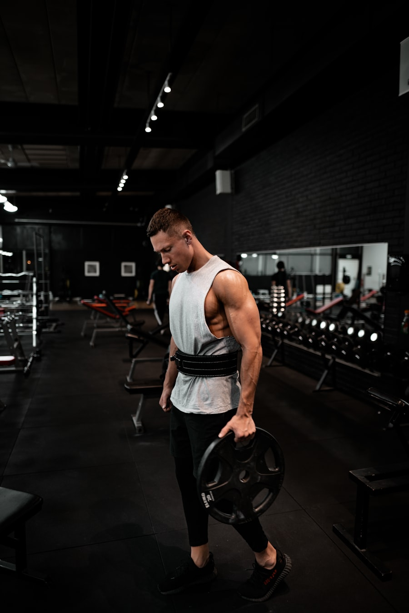

قوة وتضخيم
قوة وتضخيمكابتن خالد العتيبي
مدرب قوة وبناء عضلات
متخصص في برامج التضخيم والقوة القصوى مع تركيز على تكنيك الحركات المركّبة والتدرّج الآمن في الأوزان.
8 سنواتNASM معتمد150+ متدرب
Our Coaches · فريق التدريب
خلف كل تقدّم مدرب يفهم جسمك وهدفك. نخبة معتمدة ترافقك خطوة بخطوة وتصحّح أداءك في كل حصة.
قوة وتضخيممدرب قوة وبناء عضلات
متخصص في برامج التضخيم والقوة القصوى مع تركيز على تكنيك الحركات المركّبة والتدرّج الآمن في الأوزان.

تنشيفتنشيف وفقدان الدهون
يصمّم خطط تنشيف تحافظ على الكتلة العضلية، مع متابعة دقيقة للتغذية وقياسات InBody شهرياً.
 لياقة وظيفية
لياقة وظيفيةلياقة وظيفية وأداء
يركّز على الحركة الوظيفية والثبات والرشاقة، مناسب لمن يريد لياقة شاملة وأداءً رياضياً أعلى.

تأهيلتأهيل وإصابات
يساعد على العودة الآمنة بعد الإصابات وبناء أساس قوي خالٍ من الألم عبر تمارين تصحيحية مدروسة.